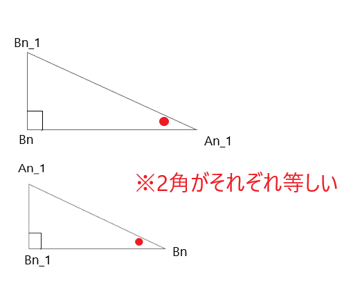

<html></html>
<head>
<meta charset="UTF-8">
<link rel="stylesheet" href="index.css">
</head>
<title>平成30年度青森県教員採用試験別解について</title>
<!-- Global site tag (gtag.js) - Google Analytics -->
<script async src="https://www.googletagmanager.com/gtag/js?id=UA-135083881-1"></script>

<script type="text/javascript" async
  src="https://cdnjs.cloudflare.com/ajax/libs/mathjax/2.7.1/MathJax.js?config=TeX-AMS_CHTML">
</script>
<style type="text/css">
div2{
  position:relative;
  text-align: center;
  top:  100px;
  font-size:x-large;
}
<div id="menu">
<ul>
<li><a href="#">ホームページ</a></li>
<li><a href="#">リスト</a></li>
<li><a href="#">日記</a></li>
<li><a href="#">掲示板</a></li>
</ul>
</div>
</style>
<body>
<h1><center>平成30年度青森県教員採用試験解答解説</center></h1>
<style>
h1{
color: #364e96;/*文字色*/
padding: 0.5em 0;/*上下の余白*/
border-top: solid 3px #364e96;/*上線*/
border-bottom: solid 3px #364e96;/*下線*/
}</style>
<div class="nav">
<ul class="nl clearFix">
<li><a href="index.html">大問1</a></li>
<li class="active"><a href="index2.html">大問2</a></li>
<li><a href="index3.html">大問3</a></li>
<li><a href="index4.html">大問4</a></li>
<li><a href="index5.html">大問5</a></li>
<li><a href="index6.html">大問6</a></li>
</ul>
</div>

<h2>2.図のように\(,xy平面上に3点A_0(0,0),B_0(0,1)C_0(3,0)\)を頂点とする直角三角形がある。
頂点\(A_0\)から辺\(B_0C\)に垂直を引いたときの交点を\(A_1\),点\(B_1\)から\(A_0C\)に
垂線を引いたときの交点を\(A_1\)とする。このように,辺\(A_0C\)上の点\(A_{n-1}\)から
辺\(B_0C\)に垂線を引いたときの交点を\(B_n,B_n\)から辺\(A_0C\)に垂線を引いたときの交点を
\(A_n\)とし,\(A_{n-1}A_nB_n\)の面積\(をS_n\)とする。\((1)〜(4)\)に答えなさい。
</h2>
<br>
(1)\(点B₁\)の座標および\(S₁\)を求めなさい。
<br>
<center>

<br>
図の<font color="#ff0000">赤の直線を①</font>,<font color="#0000ff">青の直線を②</font>とする。<br>
B_0(0,1),C(3,0)より,①の直線が求まる。<br>
②は①と垂直であり,原点を通る。<br>
</center>
\begin{eqnarray}
①:y=-\frac{1}{3}x+1 \tag{1}\\
②:y=3x\tag{2}\\
\end{eqnarray}
<center>
①と②の交点がB_1の座標であるので連立方程式を用いる。<br>
②は①と垂直であり,原点を通る。 <br>
</center>
\begin{eqnarray}
  \left\{
    \begin{array}{l}
  \large  y=-\frac{1}{3}x+1……① \\
    \large  y=3x…………②
    \end{array}
  \right.
\end{eqnarray}

\begin{eqnarray}
-\frac{1}{3}x+1 &=3x\tag{3}\\
\frac{1}{3}x+3x&=1\tag{4}\\
\frac{10}{3}x&=1\tag{5}\\
\underline{x=\frac{3}{6}}\\
(1)を②に代入\\
y&=3x\tag{6}\\
&=3×\frac{3}{10}\tag{7}\\
&=\frac{9}{10}\tag{8}\\
\end{eqnarray}
  \begin{align*}
 \underline{\large B_1の座標\left(
\frac{3}{10},\frac{9}{10}\right)}
\end{align*}
<center></center>
<center>
  \begin{align*}
  B_1
  \left(
 \frac{3}{10},\frac{9}{10}
 \right)
より,
A_1
\left(
\frac{3}{10},0
\right)
底辺\frac{3}{10},高さ\frac{9}{10}の直角三角形である。\\
\end{align*}
  \begin{align*}
よって、△S_1&=\frac{3}{10}×\frac{9}{10}×\frac{1}{2}\tag{9}\\
&=\frac{27}{200}\tag{10}\\
\end{align*}
\begin{align*}
 \underline{\large∴△S_1=\frac{27}{200}}
 \end{align*}
</center>
<hr style="border:0;border-top:2px solid skyblue;">
(2)\(△A_{n-1}A_nB_n\)と\(△B_{n-1}B_nA_{n-1}\)は相似であることを示しなさい。
<center></center>
錯覚より\(∠A_{n-1}\)と\(∠B_n\)は等しい。よって次のことがいえる。
<center></center>
  \begin{align*}
∠B_{n-1}A_{n-1}B_n&＝∠A_{n-1}B_nB_{n-1}（錯覚より）……①\\
∠B_{n-1}B_nA_{n-1}&＝∠A_{n-1}B_{n-1}B_n（90°より）……②\\
\end{align*}
\begin{align*}
 \underline{∴1,2より,△A_n-1A_nB_nと
   △B_{n-1}B_nA_{n-1}は相似である。}
 \end{align*}
<br>
<hr style="border:0;border-top:2px solid skyblue;">
(3)無限級数\(S_1+S_2+S_3+……\)の和を求めなさい。
<br>
<center></center>
<font color="#ff0000">
  <div style="padding: 10px; margin-bottom: 10px; border: 5px double #333333;">
    <center>
\begin{align*}
傾きがｍで,(x_o,y_o)を通る直線の方程式\\
y-y_o=m(x-x_o)\\
\end{align*}
</center>
</div>
<font color="black">
<br>
<center>
  \begin{eqnarray}
  B_2の座標を(x_2,y_2)とする。\\
  A_1とB_2を通る直線を②´とするとき,\\
  ②´はy=-\frac{1}{3}x+1と垂直な直線である。\\
    傾き3,
    \left(
   \frac{3}{10},0
   \right)
を通ることが分かる。\\
  更に②´のy軸との交点(切片)は
  \left(
 -\frac{9}{10}
 \right)
である。\\
  以上より②´:y=3x-\frac{9}{10}\\
  B_2の座標(x_2,y_2)は①と②´の交点なので連立方程式を解く。\\
  \end{eqnarray}
  </center>
  \begin{eqnarray}
  \left\{
    \begin{array}{l}
  \large  y=-\frac{1}{3}x+1……① \\
    \large  y=3x-\frac{9}{10}………②
    \end{array}
  \right.
  \end{eqnarray}
\begin{align*}
-\frac{1}{3}x+1&=3x-\frac{9}{10}\tag{11}\\
-\frac{1}{3}x-3x&=-1-\frac{9}{10}\tag{12}\\
\frac{10}{3}x&=\frac{19}{10}\tag{13}\\
x&=\frac{19}{10}×\frac{3}{10}\tag{14}\\
x_2&=\frac{57}{100}………③\tag{15}\\
③を②に代入\\
y&=3×\frac{57}{100}-\frac{9}{10}\tag{16}\\
&=\frac{171}{100}-\frac{9}{10}\tag{17}\\
y_2&=\frac{81}{100}\tag{18}\\
\underline{B_2の座標
  \left(
\frac{57}{100},\frac{81}{100}
 \right)}
\end{align*}
\begin{align*}
x_2-x_1=
\frac{57}{100}-\frac{30}{100}=\frac{27}{100}=\frac{3^3}{10^2}(S_2の底辺)\tag{19}\\
S_1+S_2+S_3+……\tag{20}\\
=S_1(1+(\frac{9}{10})^2+(\frac{9}{10})^4+……)\tag{21}\\
=\frac{27}{200}(1+(\frac{9}{10})^2+(\frac{9}{10})^4+……)\tag{22}\\
=\frac{27}{200}×\frac{100}{19}=\frac{27}{38}\tag{23}
\end{align*}
\begin{align*}
 \underline{\large∴\frac{27}{38}}
 \end{align*}
<br>
<hr style="border:0;border-top:2px solid skyblue;">
(4)点\(A_n\)と点\(Ｃ\)の距離が\(0.1\)より小さくなる時の最小の\\
自然数\(n\)を求めなさい。ただし必要があれば、\(\log_a x=0.4771\)として計算しなさい。
\begin{align*}
3×\frac{9}{10}&<\frac{1}{10}\tag{24}\\
\frac{(3×(3)^2n)}{10^n}\tag{25}\\
3^{2n+1}< 10^{n-1}\tag{26}\\
\log_{10} 3^{2n+1}<\log_{10} 10^{n-1}\tag{27}\\
(2n+1)(0.4771)< n-1\tag{28}\\
0.9542n+0.4771< n-1\tag{29}\\
1.4771< 0.0458n\tag{30}\\
n>\frac{1.4771}{0.0458}=32.25\tag{31}\\
n≧33\tag{32}
\end{align*}
\begin{align*}
\underline{\large ∴n≧33}
\end{align*}
</body>
<p></p>
<br>
